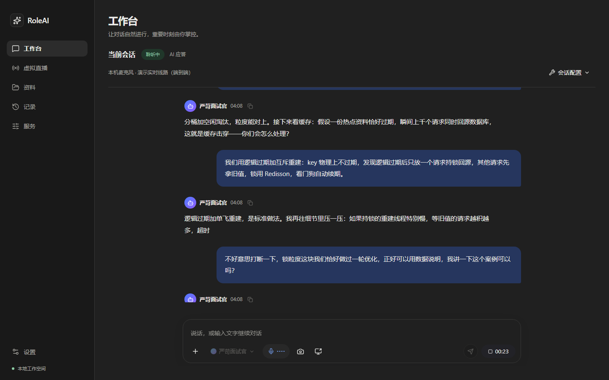
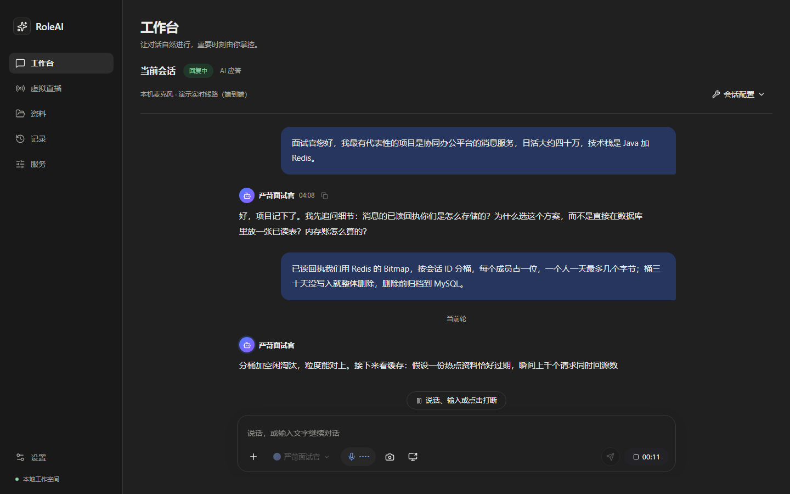
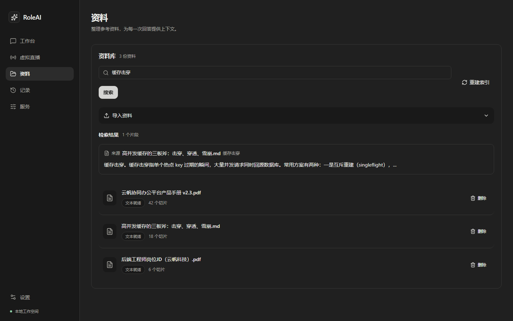
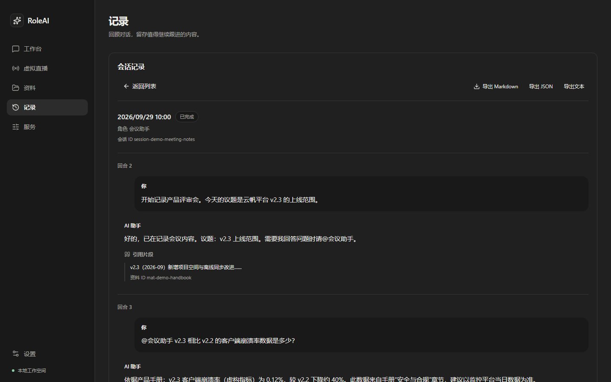
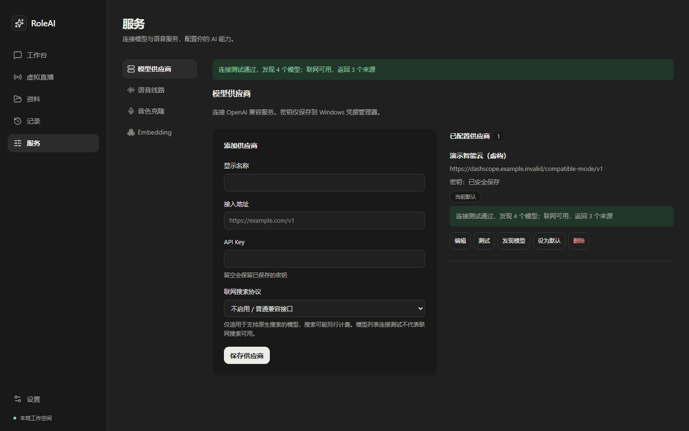
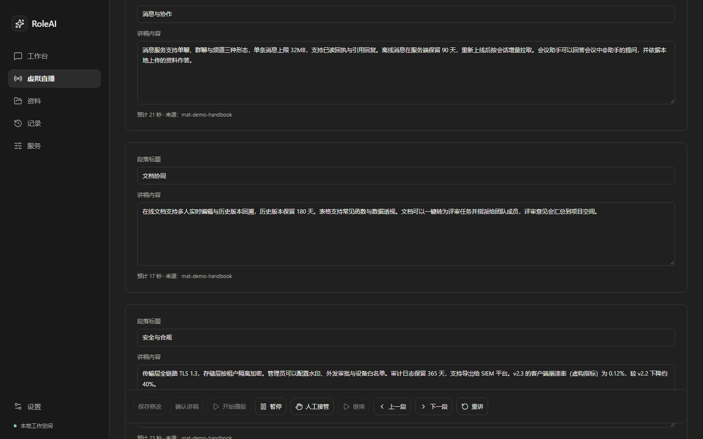
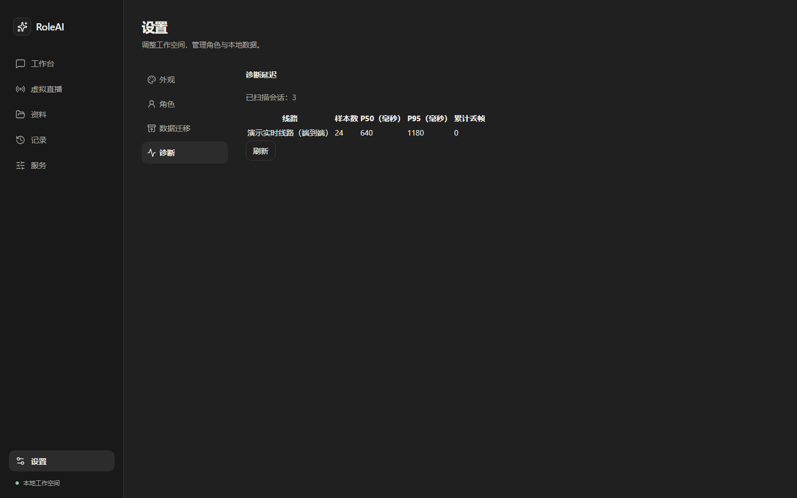

RoleAI
让 AI 以你设定的角色，参与实时交流。
Windows 桌面 AI 角色交互助手：设定角色身份、开场白和表达风格，选择模型与语音服务， 结合导入的资料进行语音对话。可用于面试问答、会议辅助和直播讲解，并提供会话记录与直播讲稿管理。

当前版本是 Windows x64 内部试用版。使用前须告知对方 AI 参与和记录方式，并由人工复核； 不得用于隐蔽冒充或未经复核的自动决策。在线演示版的所有数据均为虚构，未连接任何 AI 服务。
三个核心能力
围绕“实时交流”设计的完整闭环，从对话到记录一目了然。
-
实时语音对话
说话字幕逐字上屏，AI 回答流式显示；播放中可以随时打断，暂停、接管、纠正都有对应控制。
-
角色与资料驱动
内置严苛面试官、表达教练、会议助手、直播讲解员等角色；导入资料后回答可以检索并标注引用。
-
本机优先
角色配置、资料和会话记录保存在本机，密钥存入 Windows 凭据管理器；记录支持导出 Markdown。
界面一览
以下截图由 Playwright 自动生成，与界面同步更新。





